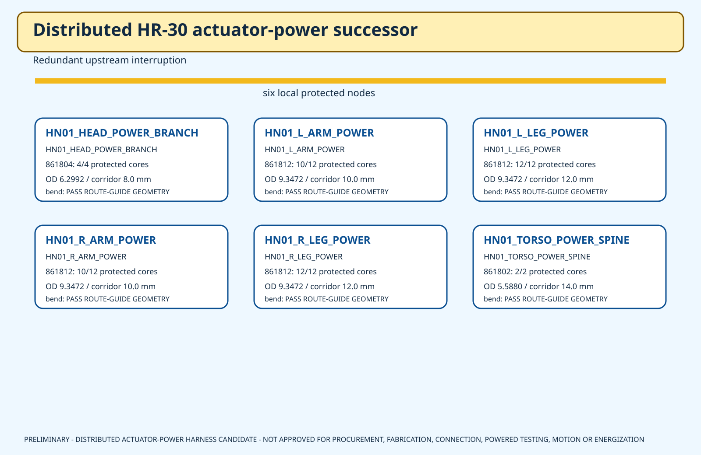

25
separately protected actuator pairs retained
HR-30 whole-body P0.1
The previous concept bundled one jacketed cable per actuator. That physically fails five of six power corridors. This successor keeps individual protection but moves it to six local nodes and uses multi-core trunks.
separately protected actuator pairs retained
local distribution nodes
exact Alpha cable families
released protection values or powered permissions
Using Alpha 861802 for every axis would exceed the geometric cross-sectional area of both leg, both arm, and head corridors. One multi-core trunk per corridor fits the diameter screen while preserving a dedicated protected pair for every axis.
The cable-only nominal comparison produces a worst bounded 80°C drop of 0.0326 V at the current candidate caps and existing straight-line planning lengths. That is not a thermal rating or final voltage-drop result.

2 protected channels
torso/neck base
HEAD_PAN; HEAD_TILT
5 protected channels
left shoulder root
L_SHOULDER_PITCH; L_SHOULDER_ROLL; L_ELBOW_PITCH; L_WRIST_ROTATION; L_GRIPPER
6 protected channels
left pelvis/hip root
L_HIP_YAW; L_HIP_ROLL; L_HIP_PITCH; L_KNEE_PITCH; L_ANKLE_PITCH; L_ANKLE_ROLL
5 protected channels
right shoulder root
R_SHOULDER_PITCH; R_SHOULDER_ROLL; R_ELBOW_PITCH; R_WRIST_ROTATION; R_GRIPPER
6 protected channels
right pelvis/hip root
R_HIP_YAW; R_HIP_ROLL; R_HIP_PITCH; R_KNEE_PITCH; R_ANKLE_PITCH; R_ANKLE_ROLL
1 protected channels
pelvis waist bay
WAIST_YAW
| Corridor | Axes | Old individual-cable fill ratio | Successor trunk | Trunk fill ratio | Bend screen |
|---|---|---|---|---|---|
| HN01_HEAD_POWER_BRANCH | 2 | 0.975805 | 861804 | 0.619999 | PASS ROUTE-GUIDE GEOMETRY |
| HN01_L_ARM_POWER | 5 | 1.561287 | 861812 | 0.873701 | PASS ROUTE-GUIDE GEOMETRY |
| HN01_L_LEG_POWER | 6 | 1.301073 | 861812 | 0.606737 | PASS ROUTE-GUIDE GEOMETRY |
| HN01_R_ARM_POWER | 5 | 1.561287 | 861812 | 0.873701 | PASS ROUTE-GUIDE GEOMETRY |
| HN01_R_LEG_POWER | 6 | 1.301073 | 861812 | 0.606737 | PASS ROUTE-GUIDE GEOMETRY |
| HN01_TORSO_POWER_SPINE | 1 | 0.159315 | 861802 | 0.159315 | PASS ROUTE-GUIDE GEOMETRY |
A fill ratio below 1 only proves the circular-area/diameter screen. It does not prove pullability, clearance, chafe, clamping, or tolerance.